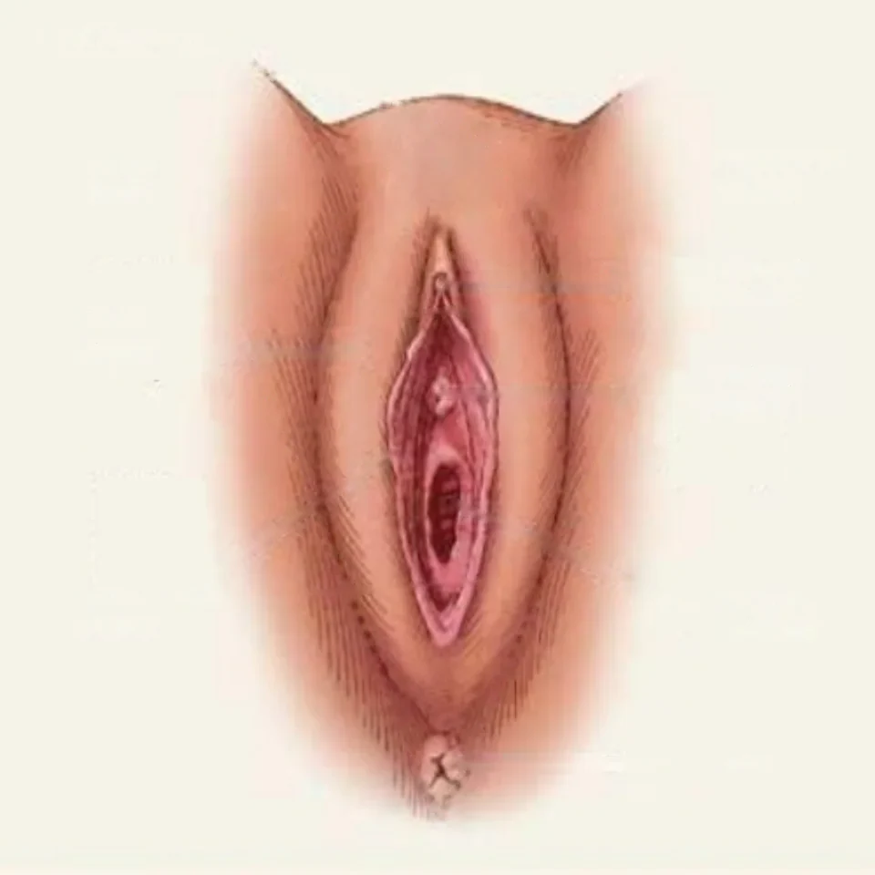
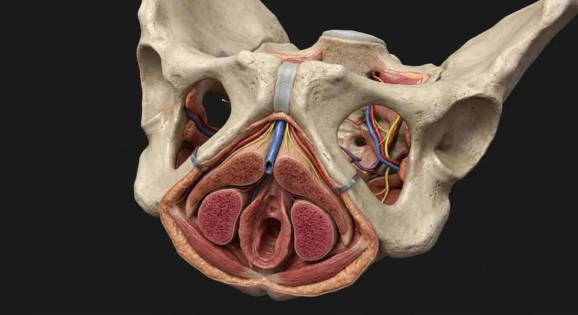

How this part of the body works
The vulva is the external genital region, not the internal vaginal canal. This cleaned surface teaching illustration shows the mons, labia, clitoral glans, vestibule and separate urethral and vaginal openings. Deeper glands, nerves and clitoral erectile tissue are described without a misleading surface pointer.
Read the anatomy, part by part
These 8 structures describe anatomy related to the chapter’s regional illustration. Each entry separates location, function and a clinical point.
Mons pubis
Fatty pad over pubic symphysis.
What it doesCushions pubic bone.
Clinical connectionNormal hair pattern and contour vary widely.
Labia majora
Outer skin folds containing fat and connective tissue.
What it doesProtect the vestibule and inner folds.
Clinical connectionVulvar lymph largely drains to superficial inguinal nodes.
Labia minora
Inner hairless folds, highly variable in size and pigmentation.
What it doesBorder the vestibule and contribute to clitoral hood.
Clinical connectionNormal asymmetry is common and not pathological.
Clitoral glans & hood
Glans at the anterior meeting of labia minora, under prepuce.
What it doesHighly innervated erectile tissue.
Clinical connectionClitoral neurovascular supply should be respected in vulvar surgery.
Vulvar vestibule
Space between labia minora containing urethral and vaginal openings.
What it doesShared surface region for urinary and genital outlets.
Clinical connectionDistinguish urethral meatus from vaginal introitus on examination.
External urethral meatus
Urinary opening anterior to vaginal introitus.
What it doesUrine exits here, not through the vagina.
Clinical connectionAn important catheterization landmark.
Vaginal introitus
Vaginal opening posterior to urethral meatus.
What it doesEntrance to the vaginal canal.
Clinical connectionHymenal tissue is variable and cannot establish sexual history.
Posterior fourchette
Where labia minora join behind the introitus.
What it doesLandmark at posterior vestibule.
Clinical connectionPerineal tears may involve this region.
Deeper structures and tissue layers
These 12 additional entries give anatomical context. They are deliberately not assigned a photographic pin on the regional image.
Clitoral body & crura
Paired erectile corpora extend along pubic rami.
What it doesErectile engorgement.
Clinical connectionMost of clitoral structure is internal rather than visible externally.
Vestibular bulbs
Paired erectile tissues along lateral vaginal opening.
What it doesEngorge with arousal, beside bulbospongiosus muscle.
Clinical connectionCan contribute to hematoma after perineal trauma.
Hymenal rim
Variable mucosal fold around part of vaginal opening.
What it doesEmbryologic remnant with a wide normal range.
Clinical connectionIts appearance is not a reliable marker of sexual activity.
Greater vestibular (Bartholin) glands
Paired glands posterolateral to vaginal opening; ducts empty in vestibule.
What it doesSecrete mucus for lubrication.
Clinical connectionDuct obstruction may cause a cyst or abscess.
Paraurethral (Skene) glands
Small glands beside the distal urethra.
What it doesContribute secretions near the urethral opening.
Clinical connectionCan rarely become inflamed or form a cyst.
Perineal body
Fibromuscular node between vagina and anus.
What it doesAttachment for bulbospongiosus, transverse perineal and anal sphincter fibers.
Clinical connectionObstetric tears may compromise perineal support.
Hart line / vestibular boundary
Transition between inner labial and vestibular epithelium.
What it doesDefines epithelial regions clinically.
Clinical connectionUseful descriptor when localizing lesions.
Vulvar lymphatic drainage
Most vulvar tissues drain to superficial inguinal nodes; clitoral routes can reach deeper nodes.
What it doesCarries immune cells and tissue fluid.
Clinical connectionSide and depth of drainage matter in cancer staging.
Perineal branches of pudendal nerve
Somatic branches from the pudendal nerve reach the posterior labia and perineal skin.
What it doesCarry sensation from the posterior vulva and motor fibers to some perineal muscles.
Clinical connectionSensation in the anterior labia also involves ilioinguinal and genitofemoral branches; a surface drawing cannot show the nerve course.
Dorsal nerve of the clitoris
Terminal pudendal branch traveling toward the clitoral body and glans.
What it doesConveys much of the somatic sensation of the clitoris.
Clinical connectionDistinct from the autonomic cavernous pathways involved in erectile blood flow.
Greater vestibular gland ducts
Paired ducts open near the posterior part of the vestibule, lateral to the vaginal opening.
What it doesConvey gland secretions to the vestibular surface.
Clinical connectionDuct obstruction can result in a Bartholin gland cyst; tiny duct openings are not resolved on this plate.
External pudendal vessels
Superficial branches approach the anterior vulvar skin from the femoral arterial system.
What it doesContribute to the skin blood supply alongside internal pudendal branches.
Clinical connectionVulvar blood supply is shared among several vessel territories; no specific artery is outlined on this surface image.
Five questions about Vulva — external genital anatomy
Short answers grounded in the structures described above. Use the illustrated guide for anatomical context.
What structures are included in the vulva?
The vulva is the external genital region: mons pubis, labia majora and minora, clitoral structures and the vestibule with urethral and vaginal openings. Some deeper glands, vessels and nerves are described separately.
Are the vulva and vagina the same structure?
No. The vulva refers to external genital anatomy; the vagina is an internal muscular canal extending from the cervix to the vaginal opening. The opening lies within the vulvar vestibule.
How are the urethral and vaginal openings positioned?
The external urethral opening is typically inferior to the clitoral glans and superior to the vaginal opening within the vestibule. Their appearance varies normally, so a teaching illustration is not a diagnostic reference.
What do the labia minora do?
The labia minora are inner hairless folds that border the vestibule and join anteriorly near the clitoral hood. Their size, color and asymmetry vary normally between people.
Can the surface image show Bartholin glands or the clitoral crura?
No. The greater vestibular glands and most clitoral erectile structures lie below the surface. Their locations are described as deep study notes, not marked as visible on the external surface illustration.
Related anatomy guides
Follow these connected structures and body systems in the illustrated atlas.

Clitoral erectile complexA three-dimensional neurovascular and erectile complex: paired crura, body, glans and closely related vestibular bulbs.↗ Vagina — walls & fornicesA layered fibromuscular canal: rugae, muscularis, fornices, vestibular opening, adjacent urethra and rectum.↗
Vagina — walls & fornicesA layered fibromuscular canal: rugae, muscularis, fornices, vestibular opening, adjacent urethra and rectum.↗ Pelvic support & surgical planesThe surgical map: ureter under uterine artery, uterosacral and cardinal supports, broad ligament folds, ovarian pedicle and pelvic floor.↗
Pelvic support & surgical planesThe surgical map: ureter under uterine artery, uterosacral and cardinal supports, broad ligament folds, ovarian pedicle and pelvic floor.↗ Female pelvis & perineumThe female pelvic floor in sagittal section: bladder and urethra, vagina and anteverted uterus, rectum behind — plus the ligaments and pouches that position them.↗
Female pelvis & perineumThe female pelvic floor in sagittal section: bladder and urethra, vagina and anteverted uterus, rectum behind — plus the ligaments and pouches that position them.↗Further reading
General anatomy references and related source chapters for continued study. These links do not make the digital illustrations clinical images or certify every anatomical variant.
This educational page is not medical advice and has not undergone formal clinical peer review. Spotted an error? Contact the editor.
Open the realistic interactive plate, label lines, focus view and self-test.